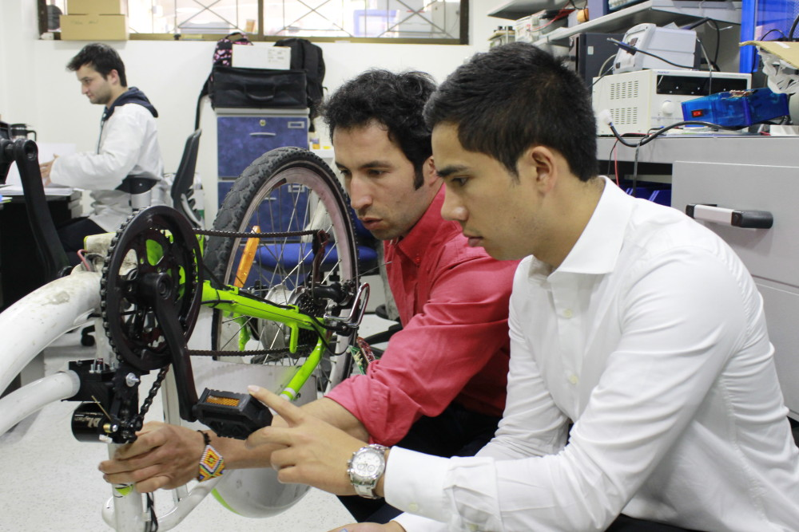

PEDALEO ASISTIDO
Este es un sistema que incorpora un elemento llamado sensor de pedaleo, el cual detecta el movimiento o la fuerza transmitida a los pedales de una bicicleta. Esta señal de movimiento se transmite al controlador, que a su vez se encarga de activar el motor del vehículo, mediante una batería de ion de litio, que suministra electricidad a todo el sistema.
Es importante tener en cuenta que este sistema se detiene automáticamente en el momento en que el usuario deja de pedalear o cuando alcanza la velocidad máxima del motor, que corresponde a los 25 km/h.
Actualmente, existen diversos sistemas de pedaleo asistido. No obstante, se hace una diferencia entre dos de ellos: simple y avanzado. El primero, mide la velocidad de pedaleo del usuario, es decir, que entre más rápido se pedalee, más ayuda va a recibir del motor.
Mientras que en el pedaleo asistido avanzado, se mide la fuerza que ejerce el usuario. Así, entre mayor sea el esfuerzo que se realiza, más ayuda se recibe del motor.
Por ejemplo, si una persona sube en su bicicleta una pendiente de 30º, estará realizando mucho esfuerzo y por ende, su pedaleo será lento. Con un sistema simple, la ayuda del motor sería poca por la velocidad del pedaleo. Sin embargo, con un sistema avanzado, la ayuda del motor sería alta, producto del esfuerzo que estaría realizando.
